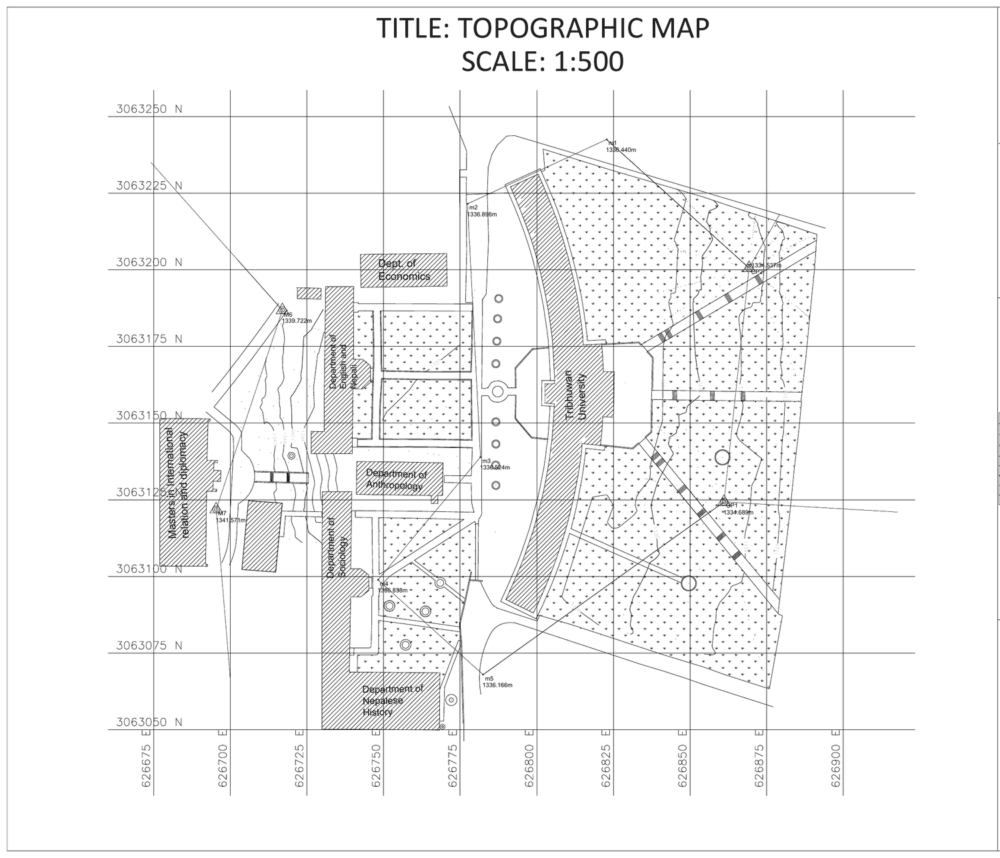
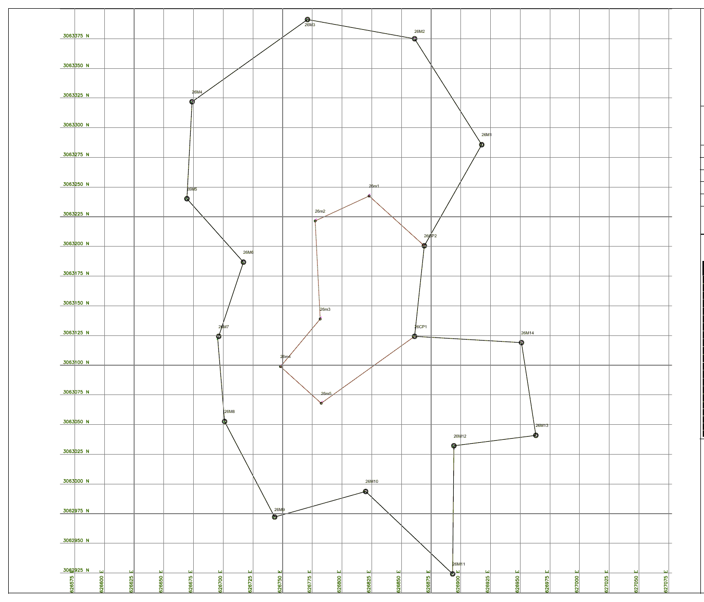

Bridge approach survey, road and drainage design
At our survey camp, my group of five surveyed the site with a Total Station, ran a closed traverse with control points, and made a 1:500 topographic map with 1 m contours. We then designed the road alignment and drainage for a bridge approach in Civil 3D, with quantity takeoffs and a cost estimate.



